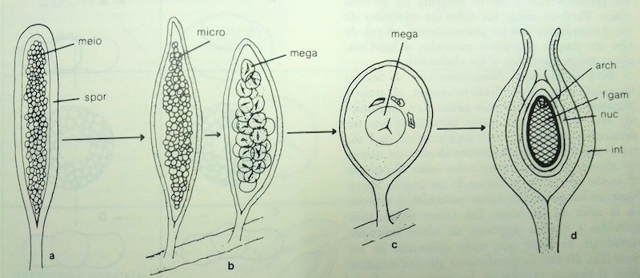
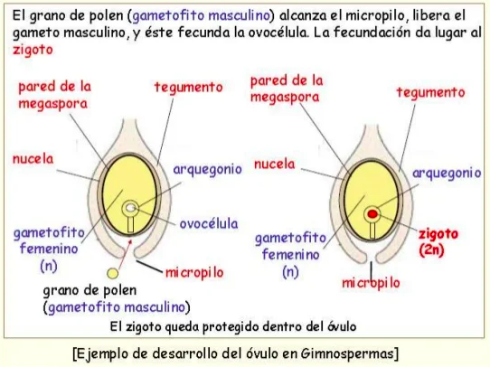

Características de la reproducción
en las espermatofitas
|
- Las espermatofitas
evolucionaron como resultado de la culminación del
fenómeno de la heterosporia.
|

|
Evolución hipotética del esporangio de los
helechos al óvulo de las espermatofitas
(de Scagel & al., 1987)
|
- Lepidocarpon,
del Carbonífero, con megasporangios de una sola
megaspora que era fecundada in situ, pero luego era
liberada antes de la formación del embrión, por tanto
era un caso intermedio entre la heterosporia y la
formación de semillas
|
- Las primeras plantas con semilla
evolucionaron casi a la vez que las heterospóricas,
y de forma independiente en varios linajes.
|
- En
cada megasporangio se forma solo una
célula madre que, tras la meiosis, desarrolla
una sola megaspora grande; las otras 3 células
haploides abortan.
- Este proceso se llama megasporogénesis.
|
- La
megaspora queda retenida en el magasporangio y
desarrolla un gametofito femenino muy simple
cuya ovocélula y es fecundada in situ por la
microspora.
- Este proceso se llama megagametogénesis.
|
- La
megaspora (que era dehiscente) se ha transformado
así en un primordio seminal (óvulo)
indehiscente.
|
- La
megaspora (óvulo) está cubierta por un tegumento
(tejido protector) que deja un pequeño orificio (micropilo)
para permitir la fecundación.
|
- La
microspora es arrastrada por el viento (o por
un vector animal) hasta el micropilo. Se comporta así
como un verdadero grano de polen.
- Su formación mediante meiosis
es la microsporogénesis.
|
- En su interior se forman un gametofito
masculino haploide con pocas células (microgametogénesis)
que produce directamente dos anterozoides
flagelados.
|
- Los anterozoides son liberados
en una gota de líquido que segrega el óvulo para
facilitar la fecundación.
|

|